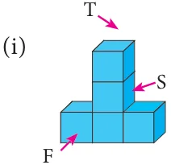
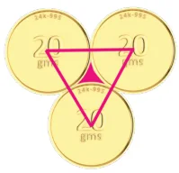

Miscellaneous Practice ProblemsMiscellaneous Practice Problems
- 1.Two gates are fitted at the entrance of a library. To open the

gates easily, a wheel is fixed at 6 feet distance from the wall to which the gate is fixed. If one of the gates is opened to \(90 ^{\circ}\) , find the distance moved by the wheel (p \(= 3 14\). ).
- 2.With his usual speed, if a person covers a circular track of radius 150 m in 9 minutes,
find the distance that he covers in 3 minutes (p \(= 3 14\). ).

- 3.Find the area of the house drawing given in the figure.
- 4.Draw the top, front and side view of the following solid shapes


Challenging problemsChallenging problems
- 5.Guna has fixed a single door of width 3 feet in his room where as Nathan has fixed a
double door, each of width \(1 \frac{1}{2}\) feet in his room. From the closed position, if each of the single and double doors can open up to 120 , whose door takes a minimum area?
- 6.In a rectangular field which measures \(15 m \times 8m\), cows are tied with a rope of length
3m at four corners of the field and also at the centre. Find the area of the field where no cows can graze. (p \(= 3 14\). )

- 7.Three identical coins each of diameter 6 cm are placed as shown. Find
the area of the shaded region between the coins. (p \(= 3 14\). )( \(3 =1.732)\)
- 8.Using Euler’s formula, find the unknowns.

ICT CORNER
“Through this activity you will Step-1 know about how to find the QR CODE given below. perimeter and area of the sectors.”
Step-2 Type Area of sector on the search column Step-3 Move the radius slide and degree slide. You will get various results.
Step 1 Step 2 Step 3
Go through the remaining worksheets given for this chapter
Web URL Measurement (measurements links)
*Pictures are indicatives only. *If browser requires, allow Flash Player or Java Script to load the page.